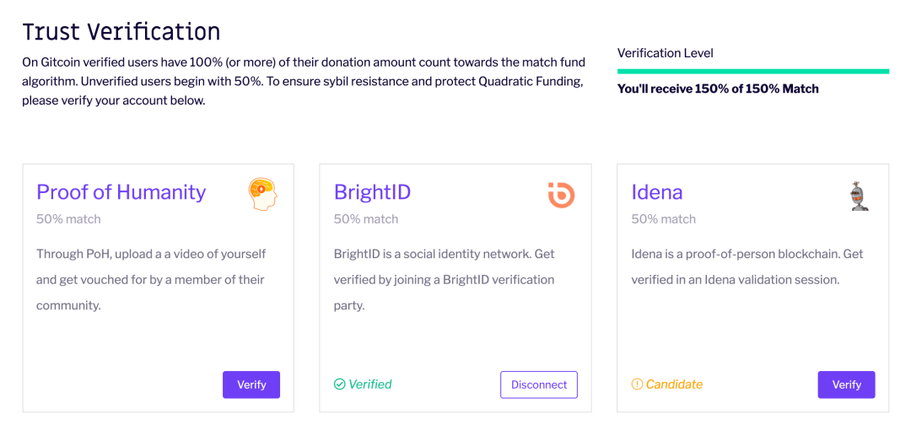
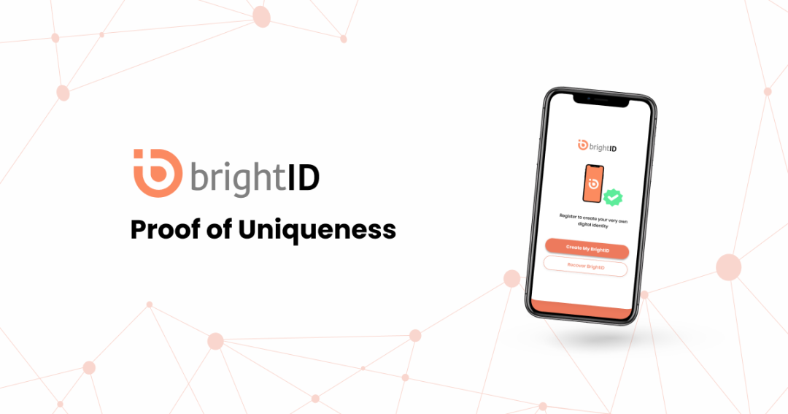
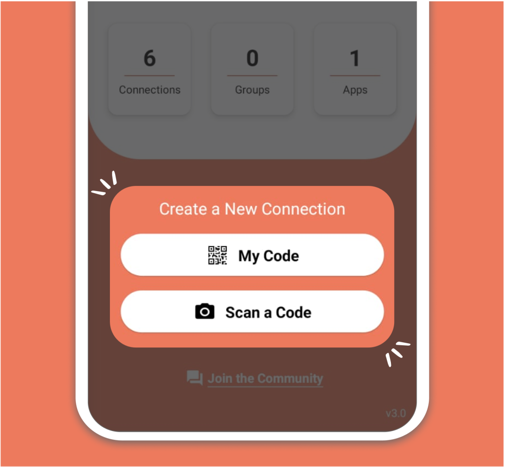
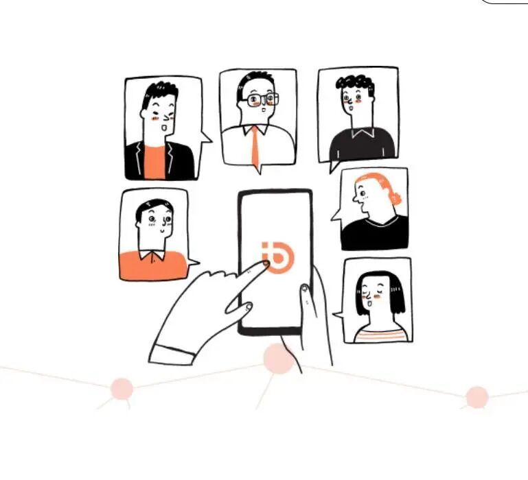
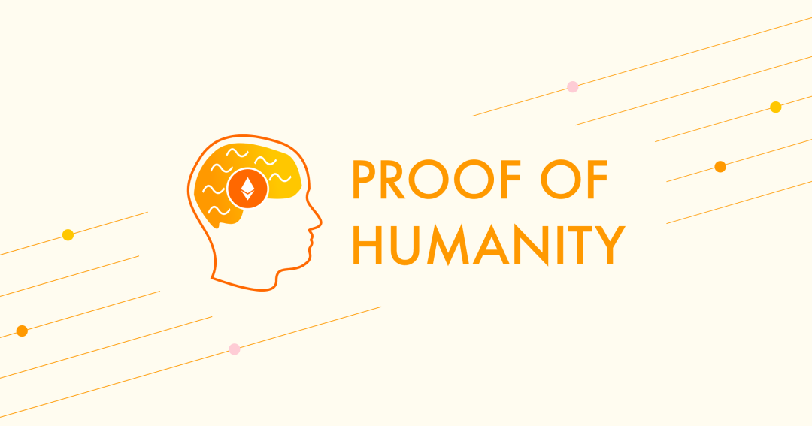
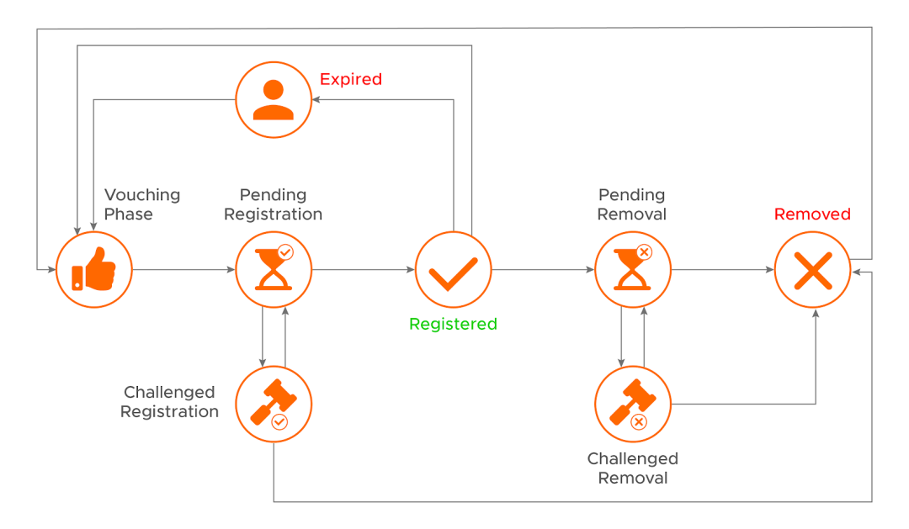
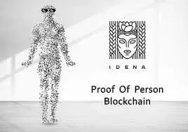
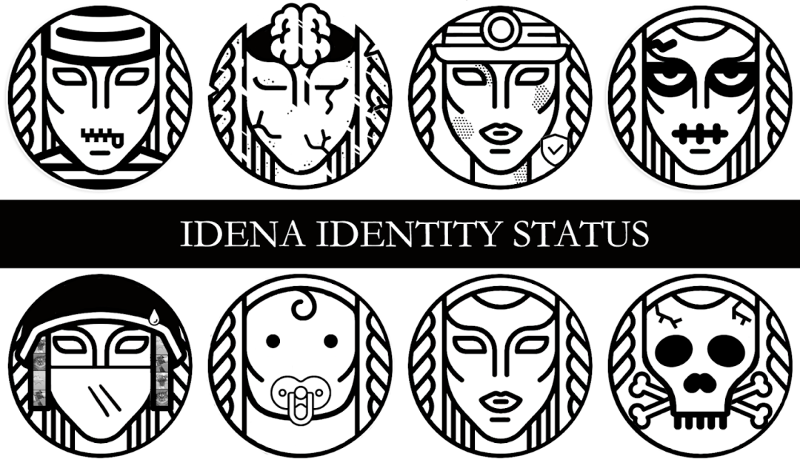

--点击左上蓝字“高小猫”关注我---
微信号：gaoxiaomao88
--点击左上蓝字“高小猫”关注我---
微信号：gaoxiaomao88
好久没写文章了。。。
这几天在捣鼓Gitcoin 11 的捐赠。然后Gitcoin上可以link一些去中心化式的身份认证系统，于是就踩了一些坑。
觉得挺有意思的，所以想来聊聊。
什么是去中心化式的身份认证？
所谓的身份认证大家也许都不太陌生。
如果你注册过任何一个crypto的交易所，KYC几乎都是躲不过去的。
一般来说对方会要求你上传一些身份证件，比如身份证，护照之类的东西，来证明你的某个账户是与你这个人有一对一的关系的。
这样做的好处很明显。如果交易所能够确定某个账户的所有人是谁，监管之类的事情就都可以跟上了。
如果这些账户的所有人做了什么坏事，追查起来就会相对容易一些。
不过这里的身份认证有个问题，它依赖于某一个中心化的机构。
比如当你提交你的身份证件给某些交易所的时候，就是交易所的人来确认你的身份。
也有的时候大家会依赖于一些第三方机构的认证，但是那个也还是需要相信某些机构。
有没有办法不需要相信某个机构，也可以完成身份认证这个事情呢？
这就是去中心化式的身份认证诞生的历史背景了。
目前Gitcoin认证的去中心化式的身份认证主要有三种，分别是BrightID，POH以及Idena。
其中BrightID最近非常火，因为它刚刚给之前在平台上做过认证的人发了几百刀的空投。
为了防止另外两个平台之后也做类似的空投（而我却没有分到），因此我就借着最近Gitcoin捐赠的这个事情一起，把这几个平台的身份认证都做了一遍。

下面我就大致讲一下认证的流程。
BrightID

BrightID相对来说认证还是比较容易的（相对于另外两个）。
它的认证教程在这里：https://brightid.gitbook.io/brightid/。
接下来讲的这些基本上在BrightID的这个教程上都有详细讲解。
按照教程，首先下载一个BrightID的app，我用的是美国的app store，不确定国内的有没有。
打开app以后，就可以看到一个页面可以扫码和显示自己的二维码。

之后为了认证，需要加入一个线上的会议来让一些官方的志愿者来帮忙认证。
这些会议每天都有，英文中文西班牙语俄语的都有。具体schedule在
https://meet.brightid.org/

这个会议还是非常火爆的，所以最好在预定时间前几分钟就准备好，然后到时间就不停地刷。
中文的那个会议室相对难挤，英文的似乎比较好挤。
进入以后，官方的志愿者会介绍一下流程，比如到时候扫一下码，然后当主持人叫你的时候，你点头确认就可以了。整个流程不到20分钟就可以结束了。
大家如果想要认证的话，可以按照这个流程走一遍。
Verify以后可以私信我，互相加一下联络人。
值得一提的是，这个确认好的身份，一旦换手机以后就没用了，必须要有三个联系人帮忙回复才行。因此有一些同样被确认过的联系人还是很有好处的。
POH (proofofhumanity)
https://app.proofofhumanity.id/

POH是另外一个去中心化的身份验证系统。相对来说他们的cost要高一些，而且流程也比较难走一些。
完成身份认证的第一步是去网站上，然后按照他们规定的要求拿一张纸，录一个视频。
具体要求在他们的网站上有。提交这个认证的手续费似乎也还有一些，并不是特别便宜。

提交以后，链上确认以后，就需要去他们的telegram群找个人来帮忙认证你的这个视频。
我之前不知道需要找人帮忙，视频上传了以后过了两个月都没人来帮忙认证。周围找了一圈，似乎没有人认证过的。。。。
telegram群的邀请链接在：
https://t.me/joinchat/G2FZNtddAUhlMmJh
进群以后，群里有一个流程，照着走就行了。
会把你添加到一个google sheet里，然后在里面你会被assign一个认证者，你需要自己联系那个人，然后让那个人帮你认证。
不过目前这个流程还有些问题，我被assign的两个认证者都不太理我，我只好再找别的认证者。希望不久以后我可以完成认证。
Idena
https://app.idena.io/


这个认证似乎是最麻烦的。
他们的流程和BrightID有点像，但是认证的meeting并不是每天都有，似乎几个星期才有一次。
我至今还没有约上，等到约上了再来更新吧。
总结
截至目前，我一共尝试了三种去中心化的身份系统。总体体验来说还是比较难用的。
相对来说BrightID算是最容易用的。
这三种东西证明的东西都很简单，即这个身份的背后是一个真实的人，而不是一个bot。但是它并不验证这个人对应的姓名，国籍等等信息。
大家如果有需要添加BrightID联系人的，或者需要POH voucher的（或者可以帮我vouch的），欢迎联系我。还有什么问题也欢迎多多交流。
下面这个是我的brightID链接：
https://app.brightid.org/connection-code/http%3A%2F%2Fbrightid2.idealmoney.io%2Fprofile%3Faes%3D07G64XDjFmBzv0hZnVp9bw%253D%253D%26id%3Dc1aLn6acl8Em